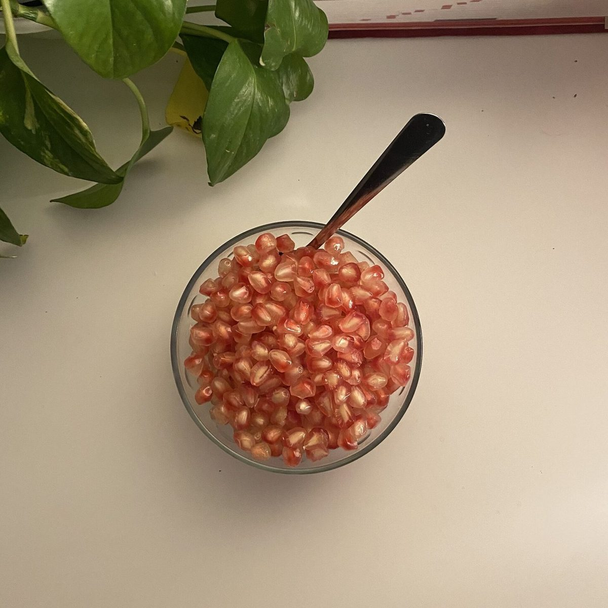
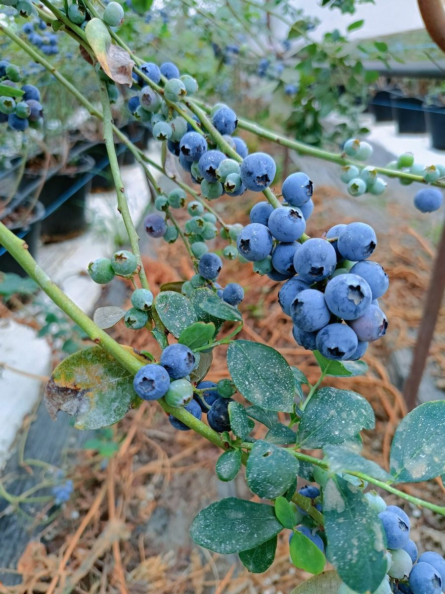

茨城県常総市・水海道森下町
畑の赤い実を、
おやつの時間にそっと。
おやつのじかんは、実家の農園で採れたいちごやトマトを使ったスイーツのお店です。
お店の由来・想い
実家の農園の実りが、おやつになる。
お店のInstagramのプロフィールによると、「おやつのじかん」では実家の農園で採れたいちごやトマトを使ったスイーツを手がけています。パンナコッタ、チーズケーキ、クッキーなどの投稿が確認できます。
情報源: Instagram @oyatsunojikan2018
店名の意味やオープンの経緯などは確認できていないため記載していません。上記の事実以外の言い回しは制作側の表現です。
おやつ
いちごとトマトのスイーツ
価格・販売日・営業時間・定休日は 準備中 です。最新の情報はInstagramをご覧ください。
下の写真は、おやつの雰囲気を伝えるフリー素材のイメージです。お店の商品そのものではありません。






口コミ
こんな声が届きそうな、おやつ屋さん
以下は制作側が作成したイメージ例で、実在のお客様の声ではありません。
イメージ例
いちごの甘さがやさしくて、午後の休憩がうれしい時間になりそうです。
イメージ例
トマトを使ったおやつは、どんな味なのか想像するだけでわくわくします。
イメージ例
手みやげにクッキーを選んだら、家族みんなで楽しめそうです。